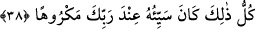

“Çünkü sen ne yeri yarabilir” ne sert yürüyüşünle yerde bir delik ve yarık açabilir
“ne de” kasılmanla “boyca dağlara erişebilirsin.” Burada kasdedilen boy, böbürlenen
kişinin zorlanarak elde ettiği göstermelik boydur. Bu ise büyüklenen kişiyle alay etmek
ve yasaklamanın böbürlenmenin yalnızca ahmaklık olmasından ileri geldiğini, insanın
kibir ve büyüklenme ile hiçbir fayda elde edemeyeceğini belirtmektir.
Kibir kınanan on hasletten onuncusudur. Çünkü böbürlenerek yürümek kibirdendir.
Allah, “Çünkü sen ne yeri yarabilir ne de boyca dağlara erişebilirsin” buyurarak
kibri tevâzu ile değiştirmiştir.
Cenâb-ı Hak seni pâk topraktan yarattı
İmdi ey kul sen de toprak gibi mütevâzı ol
Bir hadîste: “Kim kendisini büyük görür ve böbürlenerek yürürse Allah kendisine
kızmış olduğu halde huzuruna varır.”[89] buyrulmuştur.
Senin vücûdun bir şehirdir iyi ve kötü ile dolu
Sen sultansın, bilen akıl ise vezîrin
Sanki kibirli alçaklara benzer
Bu şehirde kibir sevdâ ve hırs
Sultan kötülere bile inâyet edince
Akıllı adamlara rahat vermesi nerede kalır?
Ebû Hüreyre (r.a.) şöyle demiştir: “Rasûlullah (s.a.)’den daha güzel bir şey
görmedim. Sanki güneş onun yüzünde seyrediyordu. Yürüyüşünde Rasûlullah (s.a.)’den
daha hızlı olan bir kimseyi de görmedim. Sanki yeryüzü onun için dürülüp katlanıyordu.
Biz kendimizi zorluyorduk, o ise hiç zorlanmıyordu.”[90]
38. Bütün bu sayılanların kötü olanları, Rabbinin nezdinde sevimsizdir.
“Bütün bu sayılanların” “Allah ile beraber bir başka ilah edinme” (22.) âyetinden
itibaren sayılan yirmi beş haslete işâret edilmektedir. Birincisi Allah’la beraber başka
bir ilah edinmenin yasaklanmasıdır. İkinci ve üçüncü haslet ise “Rabbin, sadece
kendisine kulluk etmenizi … emretti” âyetinde belirtilmiştir. Bu Allah’a ibadet
etmenin emredilmesi, başkasına ibadet etmenin ise yasaklanmasıdır. Diğer hasletler ise
bundan sonraki emir ve yasaklarda açıkça bellidir.
“kötü olanları” yâni yasaklananları demektir. Bunlar on dört haslettir. Çünkü
emredilen şey güzeldir. Bunlar on bir tanedir. Üç tanesi gizli, sekizi açıktır. Nitekim